速览
画面切换要尽可能「啪」地完成。另一期也说过，游戏里慢是罪；不能一概而论，但原则上越迅速越好。昏昏欲睡的慢速淡出、长时间黑屏、恢复操作前的长时间，光这些就夺走了玩家宝贵的时间；急性子一点正好。当然什么演出都没有也会让人困惑，但要意识到迅速完成。话虽如此，也提一下制作方的情况：很多作品用暗转来掩盖读取时间，即使不显示读取画面。有名的是初代《生化危机》的开门演出，既兼作读取时间，又是恐怖演出；其实门后有僵尸时，开门会稍微久一点。游戏总有符合其目的的做法。初代《塞尔达传说》的移动场景是在画面边缘卷屏：平时固定画面易玩，切换时也更容易理解地图中的位置关系；那是当时的程度，现在应能更顺滑、更快地处理。配合游戏目的，同时不让玩家浪费时间，是基本。另外，切换时加入的演出一般叫 wipe（划变），有各种样式；平常用简单淡出等，但如果贴合游戏主题、速度也没问题，用好它也是一种手段，比如《超级马力欧世界》用钥匙开锁时的效果，更有「进入了神秘空间」的感觉。《大乱斗 特别版》切到胜利画面时会随机加入 wipe。
1. 慢是罪 0:03
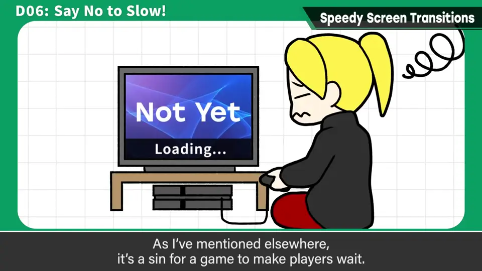
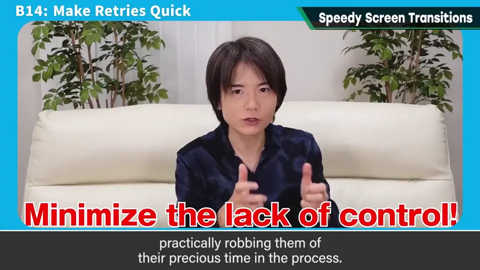
不能一概而论，但原则上越迅速越好。
昏昏欲睡的慢速淡出、长时间黑屏、恢复操作前等很久——光这些就夺走了玩家宝贵的时间。急性子一点正好。
当然，完全没有任何演出也会让人困惑，但要意识到「迅速完成」。
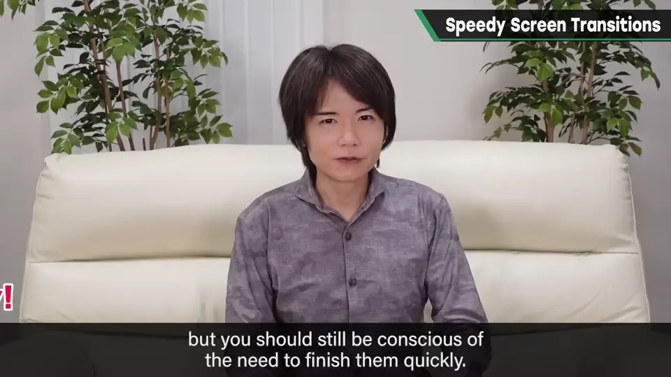
2. 制作方的情况：读取与演出 0:43
也说说制作方的情况：很多作品会用暗转来掩盖读取时间，即使没有显示「Loading」。
有名的例子是初代《生化危机》的开门演出：既兼作读取时间，又是恐怖演出。其实门后有僵尸的地方，开门会花得稍久一点。
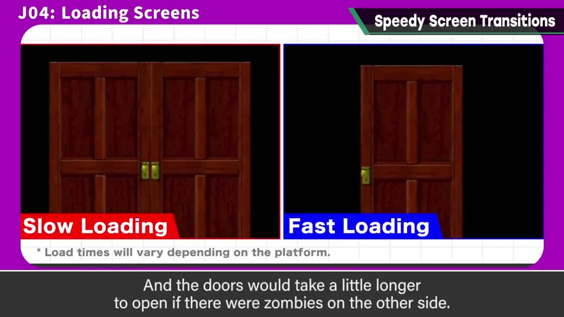
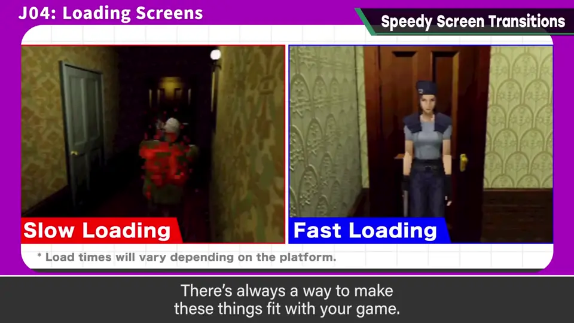
游戏总有符合它目的的做法。
3. 《塞尔达》的卷屏 1:10
初代《塞尔达传说》的移动场景在画面边缘卷动：平时是固定画面，便于游玩；切换画面时，也更容易理解在地图中的位置关系。
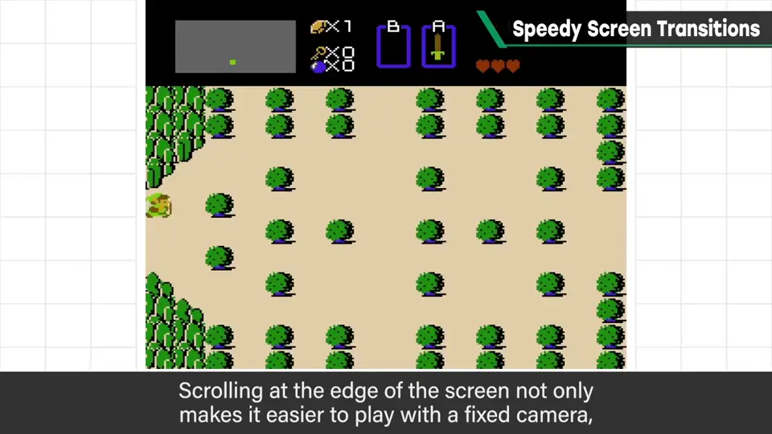
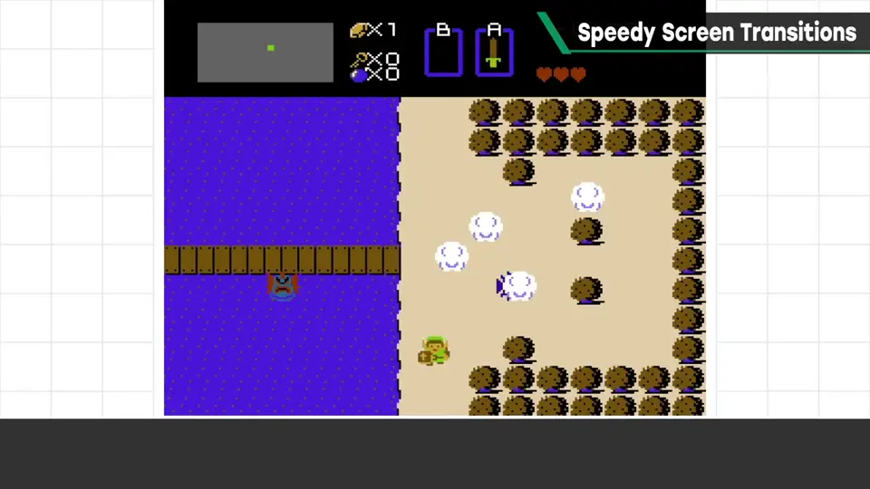
那是当时的水平；放到现在，应该能处理得更顺滑、更快。
4. 划变（wipe） 1:38
画面切换时加入的演出，一般叫作 wipe（划变），有各种各样的样式。
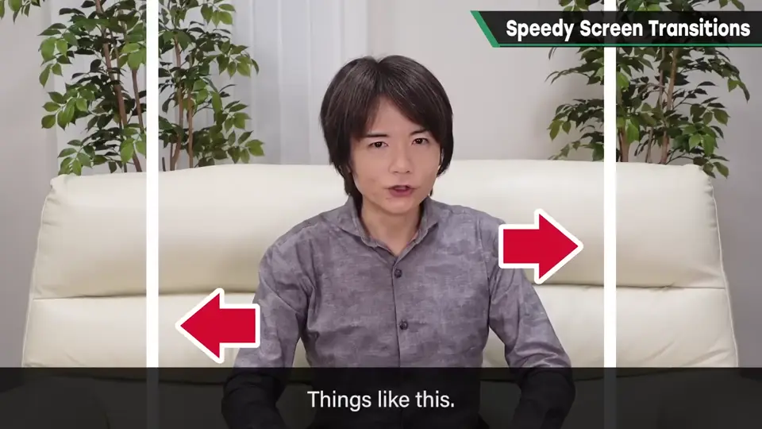
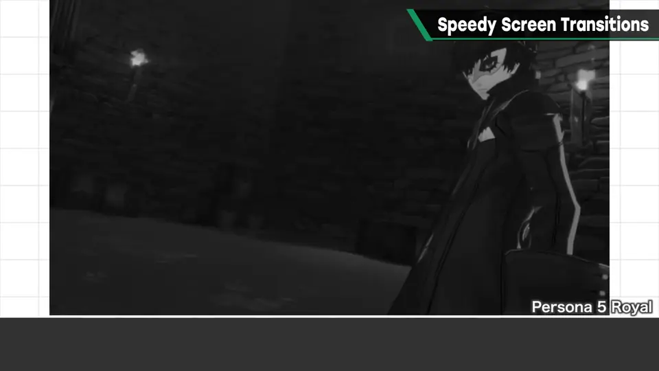
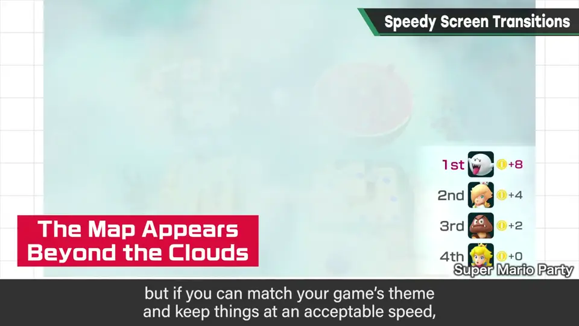
平常用简单的淡出等；但如果贴合游戏的主题，速度也没有问题，那么用好它也是一种手段。
例如《超级马力欧世界》用钥匙时的效果，更有「进入了神秘空间」的感觉。《大乱斗 特别版》切换到胜利画面时，会随机加入 wipe。
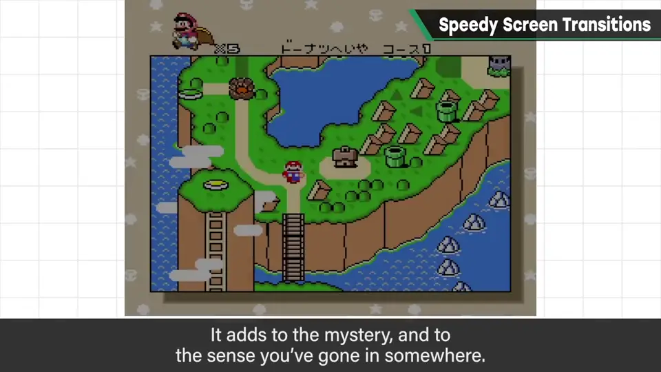
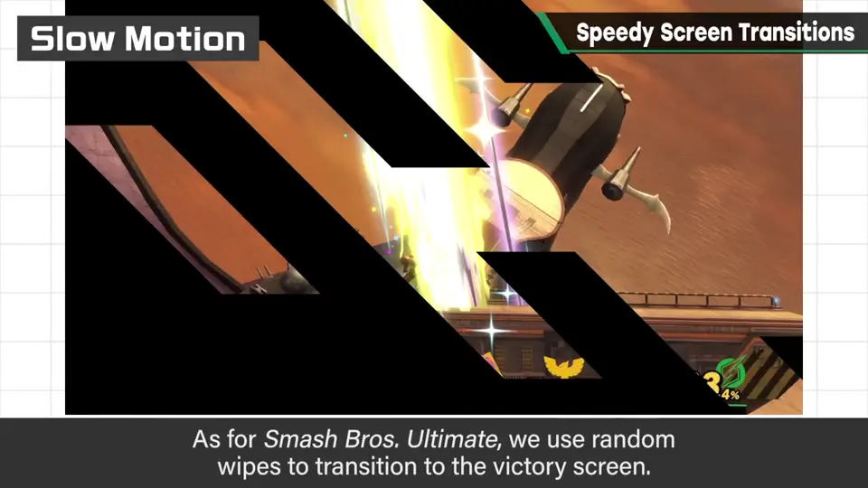
自测题
1. 为什么画面切换要尽量快？
慢是罪：慢速淡出、长黑屏、长时间无法操作会夺走玩家宝贵时间。 0:03
2. 初代《生化危机》的开门演出有什么作用？
兼作读取时间与恐怖演出；有僵尸处开门会稍久。 0:52
3. 什么情况下值得用复杂的 wipe？
贴合游戏主题，且速度不成问题时。 1:54